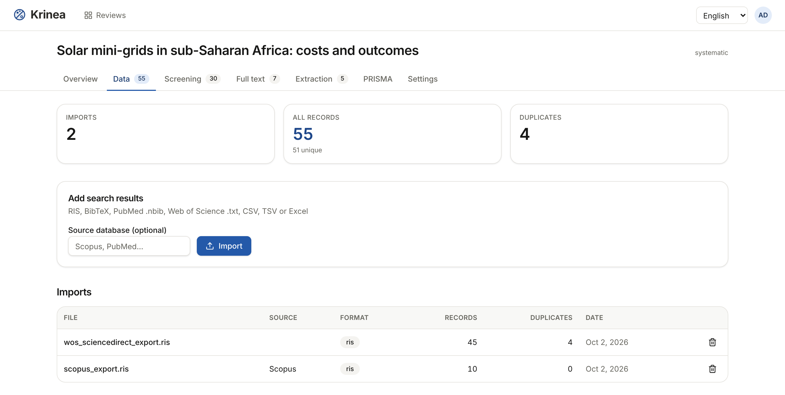
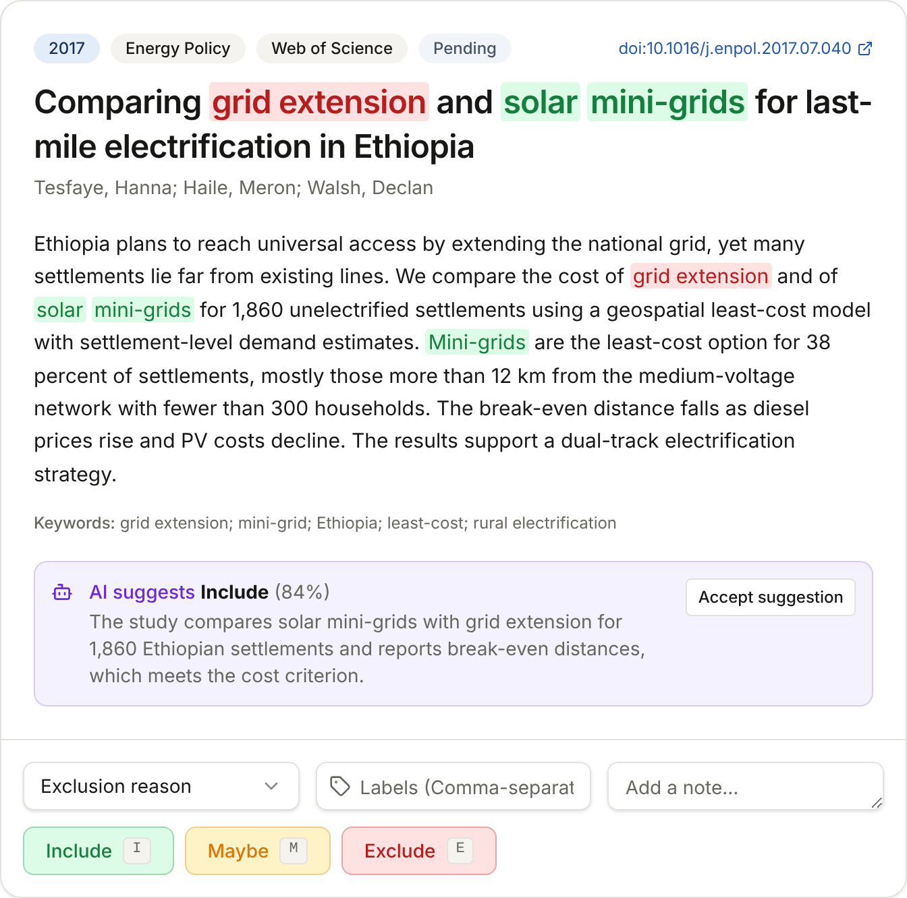
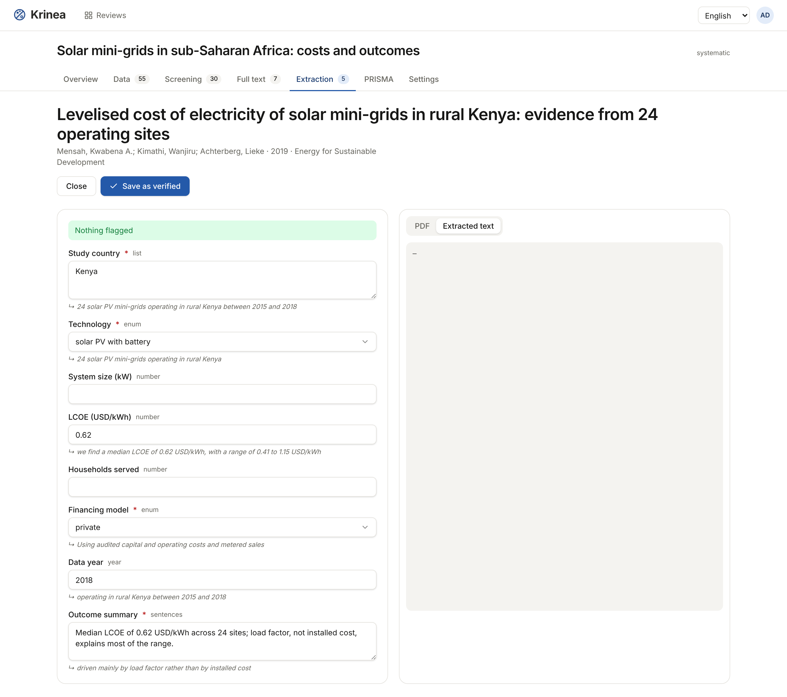
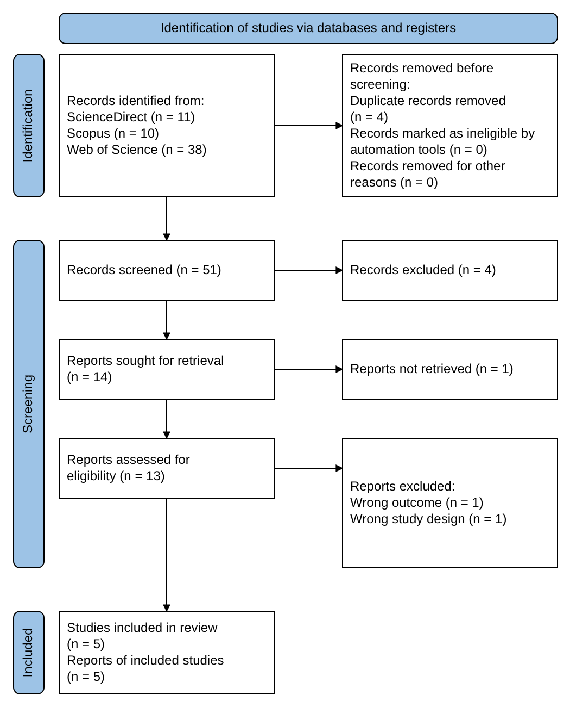

Krinea, outil open source pour les revues systématiques
RIS, BibTeX, PubMed, Web of Science, CSV ou Excel : le format est reconnu automatiquement, et les doublons sont repérés dès l'import.

Mots-clés surlignés, raccourcis clavier, et en double lecture chacun décide sans voir le choix de l'autre.

Chaque valeur proposée vient avec le passage du PDF dont elle est tirée. Vous vérifiez, puis vous validez.

Les effectifs viennent de vos décisions, jamais saisis à la main. Tout s'exporte, à tout moment.

Hébergé dans l'Union européenne, ou sur votre propre serveur.
krinea.org